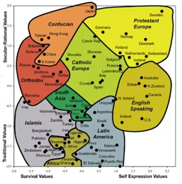
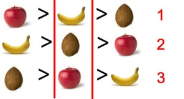
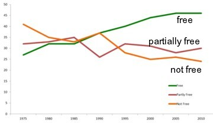
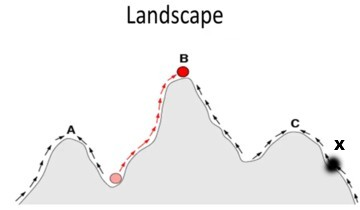
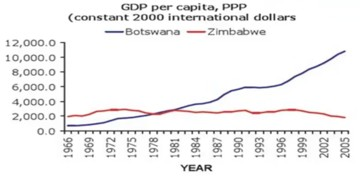
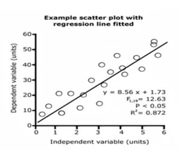
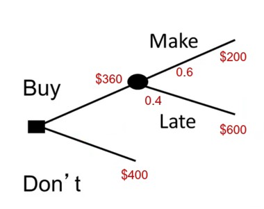
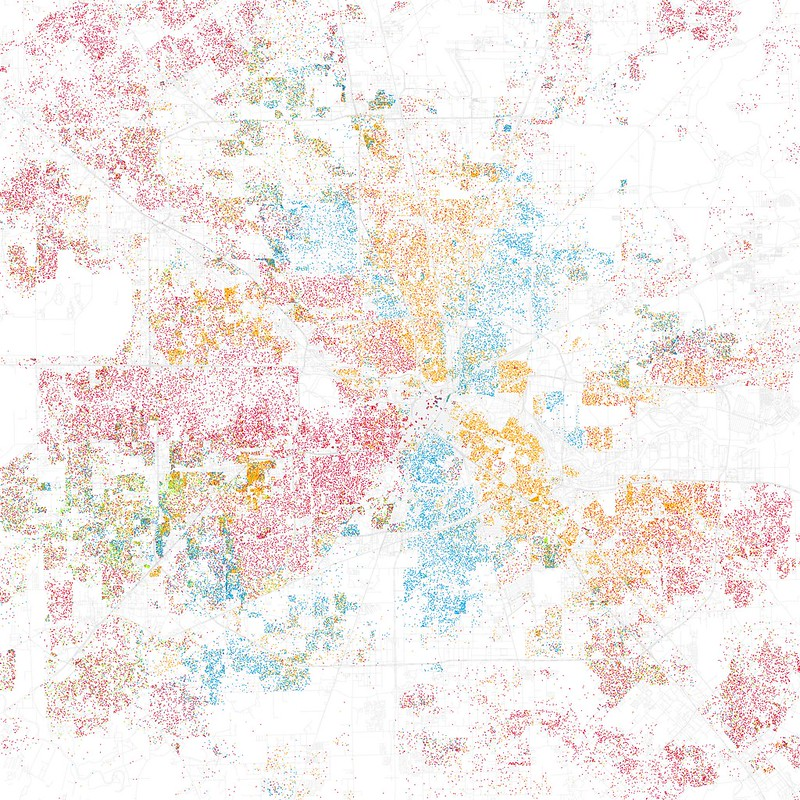

Oren Bochman’s Blog
About
Neural Networks for Machine Learning
Model Thinking
XAI
rl
rhetoric
TFP
AB testing
cognitive AI
Source Code
Report a Bug
Archive
Oren Bochman’s Blog
Order By
Default
Date - Oldest
Date - Newest
Title
Lesson 13 - Path dependence
Path dependence
means that what happens at time
T
depends on all time steps
t<T
. Or put plainly that history matters.
Oren Bochman
Aug 13, 2023

Lesson 12 - Coordination and Culture
Coordination is doing the same somebody else is doing. Culture refers to differences between groups of interacting people. In order to have these differences between groups…
Oren Bochman
Aug 12, 2023

Lesson 11 - Lyapunov Functions
Lyapunov functions map models into outcomes. We can take a model or a system and ask whether there is a Lyapunov function that describes that model or system. If that is…
Oren Bochman
Aug 11, 2023

Lesson 10 - Markov Processes
Markov models consist of entities that can be in a set of states and there are transition probabilities between those states. e.g., there is a set of students. Those…
Oren Bochman
Aug 10, 2023

Lesson 9 - Diversity and innovation
There are several issues regarding to problem solving, e.g. how individuals and teams go about solving problems, the role of diversity in problem solving, how ideas can get…
Oren Bochman
Aug 9, 2023

Lesson 8 - Economic Growth
Exponential growth is accumulating over time like interest. It is possible to make primitive models for economic growth. These models show that without innovation, growth…
Oren Bochman
Aug 8, 2023
Lesson 7 - Tipping Points
The straw that broke the Camel’s back is utterly ridiculous example. Here is perhaps a few better ones:
Oren Bochman
Aug 7, 2023

Lesson 6 - Categorical and Linear Models
Categorical models allocates the data into different boxes. For example, trying to understand why some people live longer than others, we could divide them into people who…
Oren Bochman
Aug 6, 2023
Lesson 5 - Thinking Electrons Modelling People
“Imagine how hard physics would be if electrons could think.” — Murray Gell-Mann (1969 Nobel Laureate in Physics)
Oren Bochman
Aug 5, 2023

Lesson 4 - Decision Models
Decision models encode how people make decisions as well as how they should make decisions.
Oren Bochman
Aug 4, 2023
Lesson 3 - Aggregation
More is different. — Physics Nobel Laureate Phillip Anderson, Nobel Memorial Prize Laureate
Oren Bochman
`Aug 3, 2023`{=html}

Lesson 2 - Segregation and Peer Effects
In this lesson we get started by looking
Oren Bochman
`Aug 2, 2023`{=html}
Lesson 1 - Why Model?
Perhaps not the subject of this course, but sometimes I wonder
Oren Bochman
Aug 1, 2023
No matching items